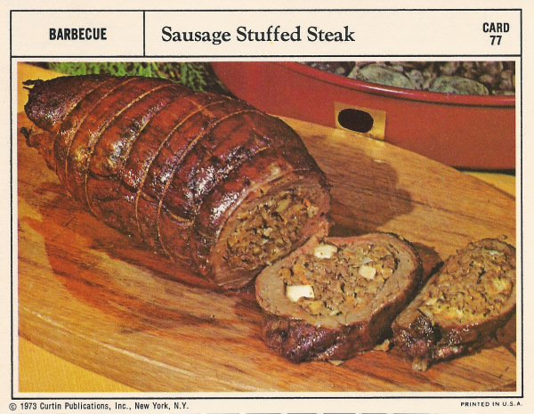

Back to Table of Content
Sausage Stuffed Steak

Ingrediens
- 11/2-pound flank steaks
- Salt and Pepper
- 1/2 pound ground pork
- 1/2 pound ground beef
- 1/2 pound ground beef
- 1/4 cup chopped celery
- 1/4 cup chopped onion
- 1 cup prepared cornbread stuffing mix
- 1/4 cup water
- 1/4 cup shredded carrot
- 1/2 cup coarsely chopped walnuts
- 1 apple, pared and diced
- 1 egg
Preparation
- Prepare coals.
Gently pound steaks with a mallet to 1/4-inch thickness; season with salt
and pepper.
- Sauté sausage in a skillet until lightly browned; add beef and brown completely.
Remove from heat.
- Remove meat; drain all bu 2 tablespoonsfat .
Sauté celery and onion until
tender.
Combine stuffing mix with water; add meat, vegetables, walnuts, apple
and egg.
pin long sides of
steaks together with toothpicks; turn meat so picks are on bottom and spread stuffing mixture over
meat
- Roll tightly, beginning with the long side; skewer ends to enclose stuffing securely.
Using butchers
string, tie roll securely in 5 or 6 places; remove toothpicks.
When coals are ready, spread them in a
circle to the outside of the grill; place meat in center of grill. Cook 1 to 1 1/2 hours until done, turning
frequently.